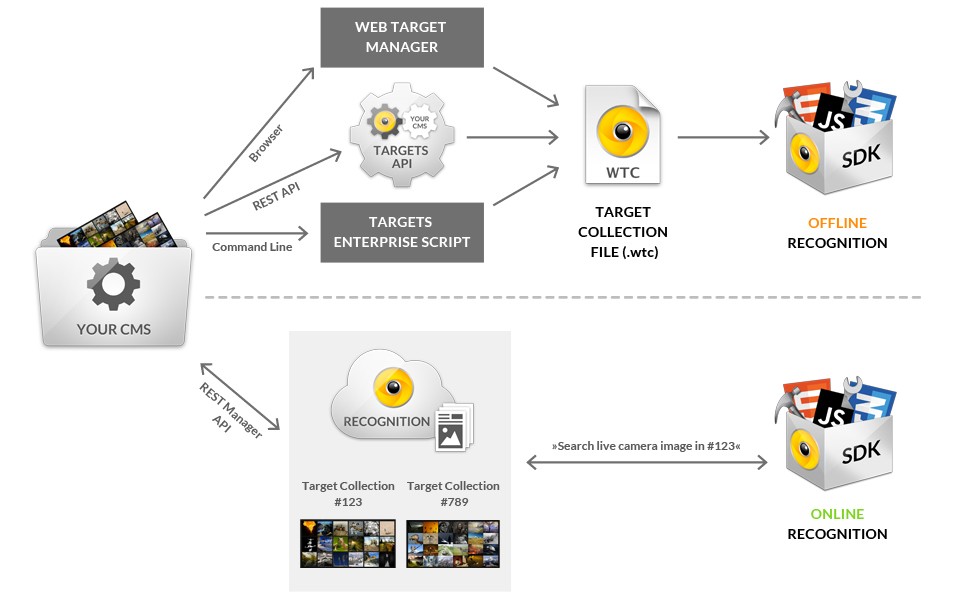
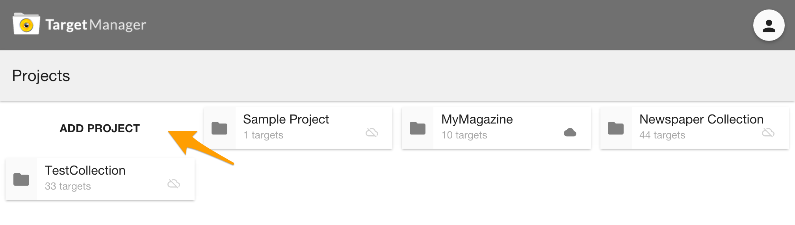
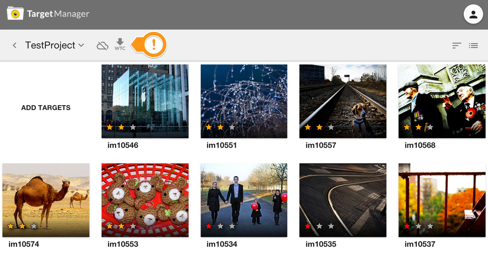
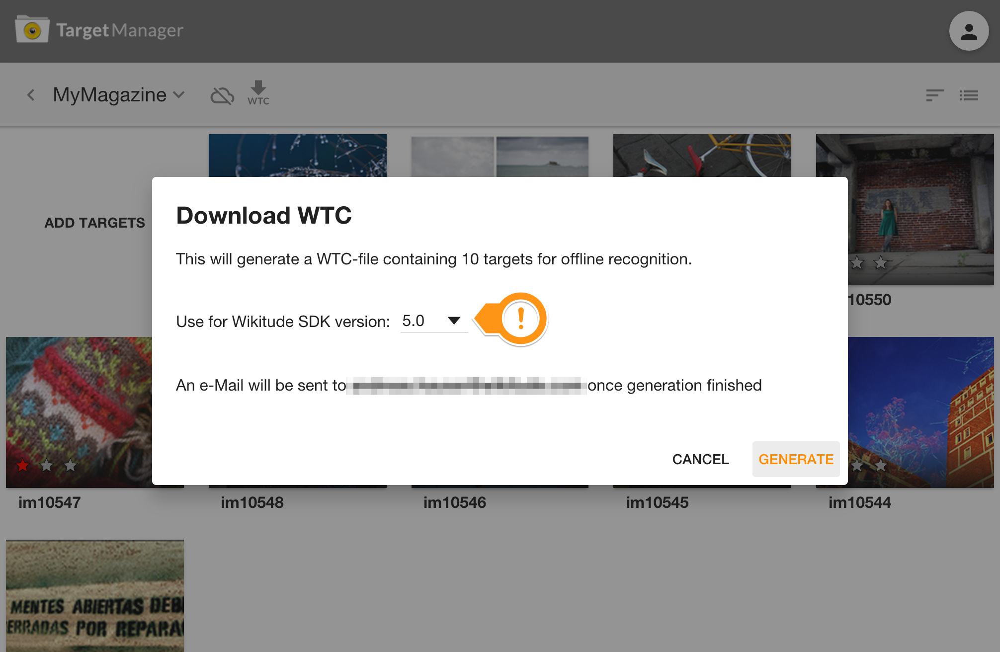
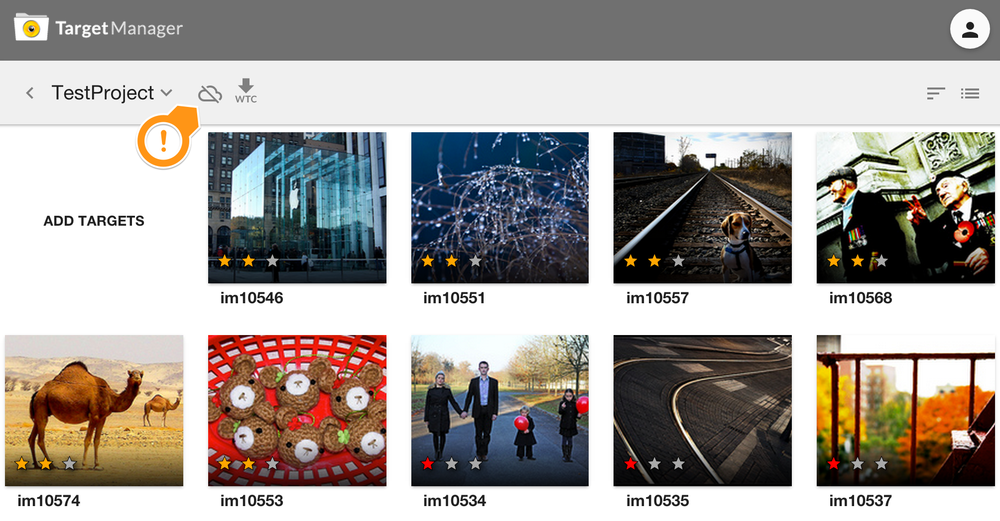
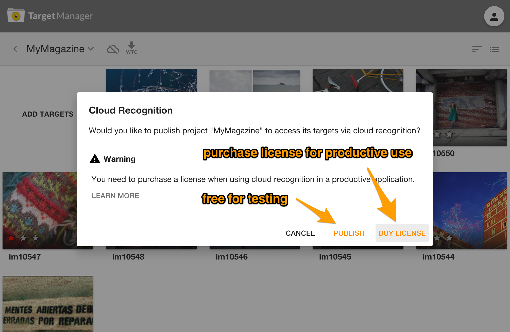
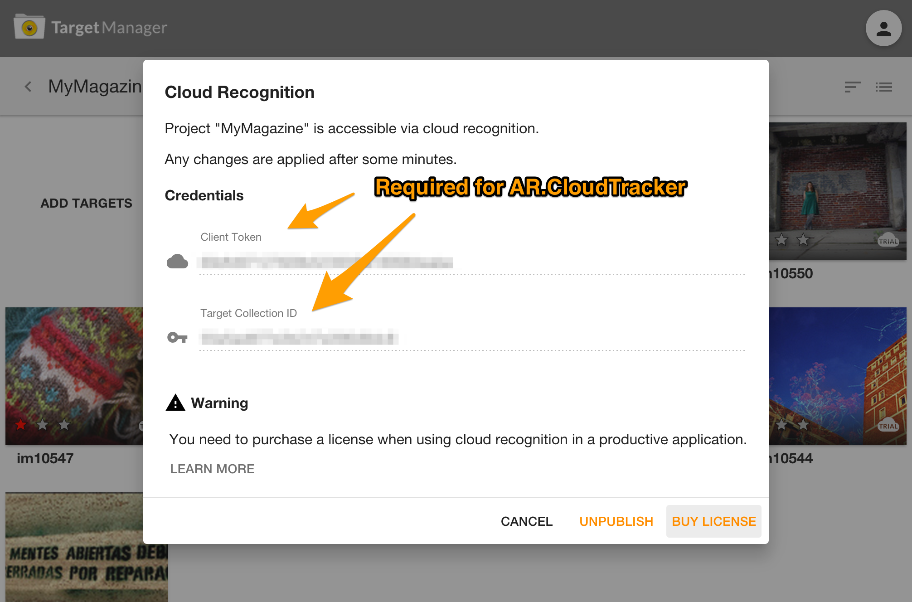
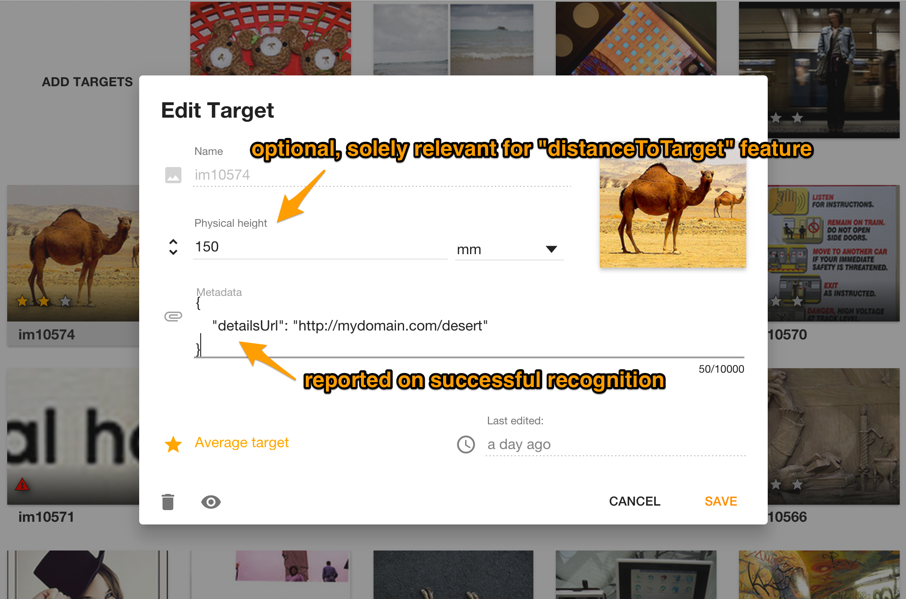

Target Management
This guide gives you an overview of how to create a target collection that you can use to detect and track images within your augmented reality experience.
In general the conversion can be done via three different tools:
- Web Target Manager Tool: A browser based tool to convert your images to a wtc file. You can find the tool under: https://targetmanager.wikitude.com. You need your free developer account to log-in. This tool is described in more detail on further below
- RESTful API. Make use of all features provided by the web tool via direct server endpoints.
- Targets Enterprise Script: A binary shell script available for Mac OS X and Linux converting images to target collections. Pleases contact Wikitude Sales team for technical requirements and pricing.
The following images describes the relationship between the above mentioned methods and the Wikitude Cloud Recognition Service, which is not scope of this documentation.

Web Targetmanager
Add a new project
- Open https://targetmanager.wikitude.com and login with your Wikitude Developer account
- Add a new project to your project collection

Add target images
- Enter an existing project
- Add new target images to the project either by clicking on
Add Targetsor drag & drop them on the empty area. Supported file formats include PNG and JPEG. If you are using PNG images, please make sure that it does not contain any transparent pixels, only solid colored images are supported.
- When uplaoding a target the file name is used as
target name. It identifies a target in your experience. If thetarget nameis not completely visible, hover over it to reveal the full name or double click the target to enter edit-mode.
If you add your own target images you need the target name to set them in
AR.Trackable2DObject.Star Rating
- 0 stars: Not suitable for tracking. This target image cannot be tracked because it lacks textured features with high local contrast. Please consider choosing another target image.
- 1 star: Limited tracking ability. This target image provides basic tracking performance in good lightning conditions. Please consider improving the image
- 2 stars: Good tracking ability. This target image will track well in most conditions.
- 3 stars: Very good tracking ability. This target image will track very well in most conditions.
General advice for reference images
- Good image characteristics:
- Diversely textured image with high local contrast
- Bad image characteristics:
- Large areas with solid color or smooth color transitions
- Repetitive patterns
- Logos, signs
Create a WTC file
- AR.ClientTracker requires a WTC (Wikitude Target Collection) file which contains all information of the targets that should be recognized. Enter the project you need the file for and click the WTC icon in the toolbar.

- Select the Wikitude SDK version you're using and click Generate to trigger the creation of the WTC file. You will be notified via e-Mai once the file is available for download.

Use project's WTC file in your ARchitect World
Look at one of the client recognition examples or refer to the JavaScript API reference of AR.ClientTracker for instructions on how to use the created target collection for augmentations in your ARchitect Worlds.
Cloud Recognition
Any existing project may also be published to the Cloud to make it accessible for AR.CloudTracker.
Click the Cloud icon in the toolbar for more details.

Cloud Recognition is available for free in your testing process but you must purchase a license for productive use. Learn more

Once a project is published it is accessible via Wiktiude SDK using 'Client Token' and 'Target Collection ID' (compare AR.CloudTracker)

Hints
You may unpublish a project at any time but be aware that this action has immediate effect on your application(s) making use of the credentials.
Metadata in the 'Edit Target' dialog is solely relevant for Cloud Recognition whereat Physical Height is only relevant for distanceToTarget feature.
Leave Physical Height empty if you do not use the distanceToTarget feature of
AR.Trackable2DObject.The Metadata field is very useful. It allows you to attach JSON data to a target. That way you can define any kind of additional data and react on it dynamically in the SDK to e.g. let a button refer to a details page which is defined in the Metadata JSON.
